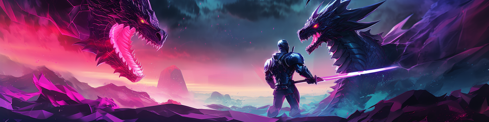
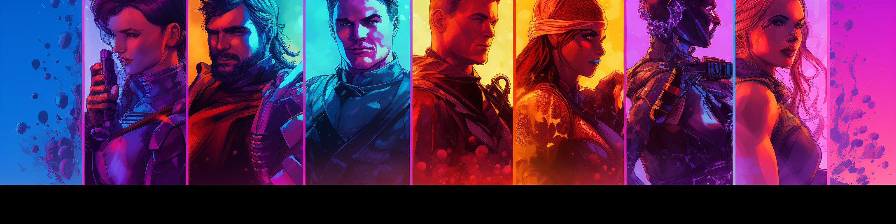
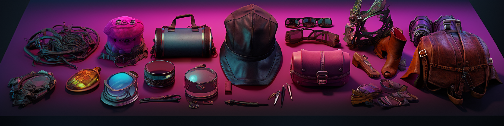
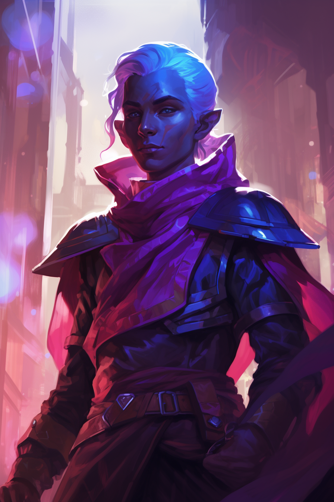
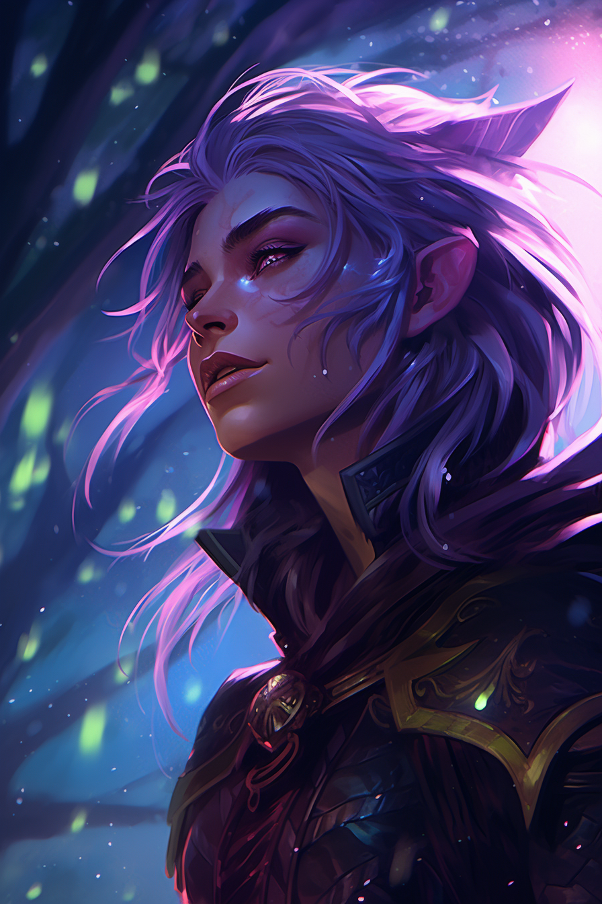
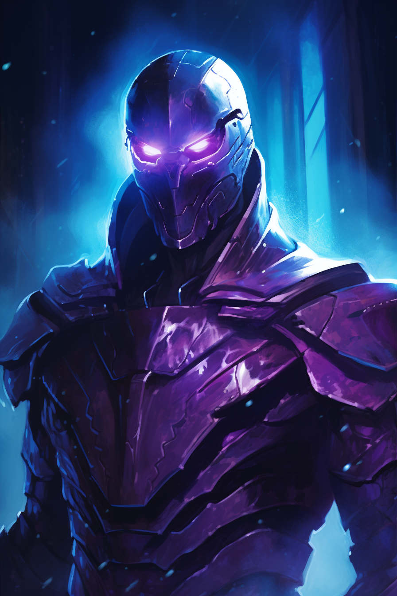
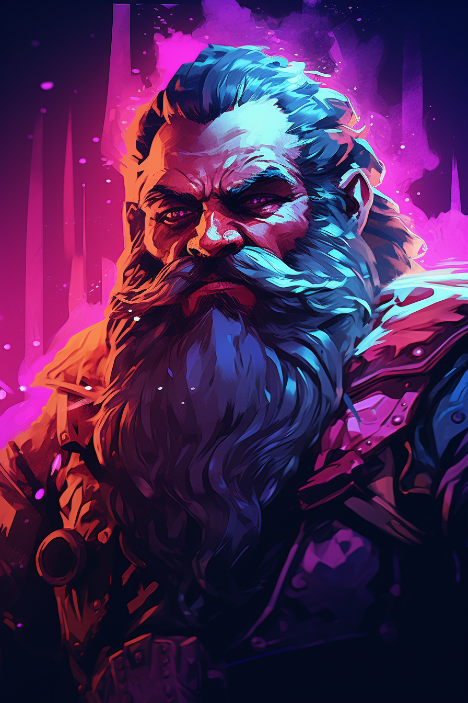
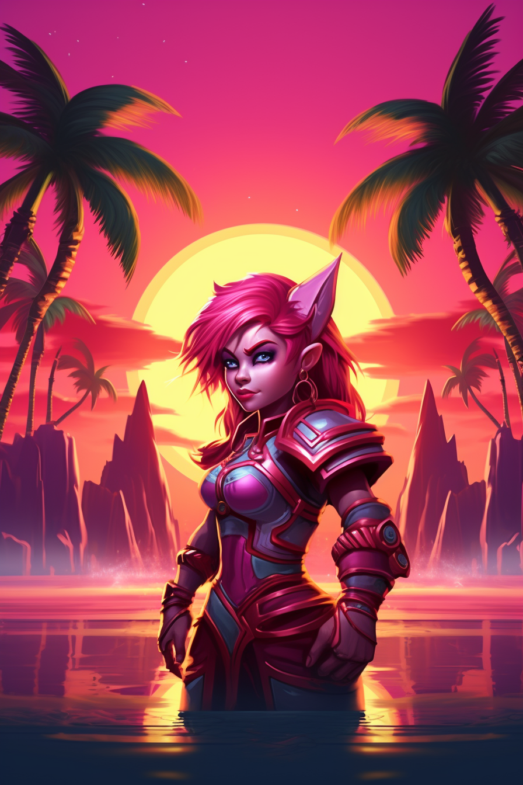

Chronicles of Heroes
Table of Contents
1. Introduction

Chronicles of heroes is a ruleset for a high fantasy setting for chronicles of darkness. The following is mostly a combination of Mirrors content, with added support for Mages (and other supernatural templates), as well as equipment and gear for aspiriring heroes.
2. Character generation
First, create a typical Chronicles of Darkness mortal character.
5/4/3 stats, 11/7/4 skills +3 specializations, 7 merits. (+3 merits, for a total of 10, if you pick a supernatural template, which you most likely do.)
You then select a supernatural template - Hero, Atlantean, Werewolf, Vampire, Geist, Prometean or any other Chronicle of darkness template.
Atlanteans use the standard Mage rules for character generation.
Heroes use the rules outlined in Mirrors, but are also written here for completeness.
Each supernatural template is also tagged with a short list of easily applicable classes - which D&D classes would easily fit this type of character. These lists are not rules, nor are they exhaustive. But if you feel overwhelmed, it might help to just focus on reading those that match your class.
2.1. Attributes
Decide if your character is more of a mentally, physically or socially oriented character. In one of those groups, spend 5 points, in another spend 4, and in the last, spend 3. Mind that you start with 1 in each attribute before spending point, so you should end up with a total of 8, 7 and 6 points total in each group.
You cannot move points between the groups for a more even (or uneven) spread.
2.2. Skill
Just like with attributes, you determine which group you'll spend each of the three set of points on. In on group, spend 11, in another 7, and in the last 4. Note that you do NOT start with 1 point in each skill, so this time it really is 11/7/4 total.
2.3. Specialization
Skill specializations are just another skill dot, that only applies under specific circumstances. This should be narrow enough that it doesn't always apply, but general enough that it often applies. Think of it as "they way you do the thing that you do" - "swords" could be a good specialization for "weaponry", "combat" could be a specialization for "ride", "arcane" could be a specialization for "occult". It should be the way that you think you're going to be using your skill.
2.4. Merits
There are a TON of merits for you to take. Merits are all the details about your characters life that might be benificial during play. A character could be rich, but with all their assets being locked away in another kingdom. That's not a merit - however, having near-instant access to amazing wealth IS a merit (namely, "resources").
Merits cover everything from superior genes, to learned skills such as fighting styles or special education, to social standings, to generational wealth, to fate just smiling upon you.
I've included a set of merits here, but the list is by no means exhaustive.
2.5. Meet the Supernaturals
2.5.1. Heroes
All classes
Heroes are the ordinary mortals, chosen by the great powers that be, to shape history, to shelter the weak or to wreak havoc and spread fear.
Some heroes don't even know why they were chosen, and by what or whom, just that they are heroes, and now they have to bear that burden. Whatever the reason, they are able to do super human feats on regular basis - jump farther, run faster, remaing undefeated in combat for decades.
All heroes fight against hybris. Any mortal that suddenly finds that they are stronger, faster and better than everyone else, can easily forget that they are not invincible. Or the entity that granted them their powers might just take them back.
2.5.2. Mages
Wizards, Sorcerers, Druids, Monks
Mages are decendents of the Atlanteans - semi-cosmic beings that lived and breathed magic, or chaos, depending on point of view.
Raw magic was hidden away from the world aeons ago, guarded by a shield known as the void, the veil or the abyss. Mages are able to pull back the veil and draw raw magic into the world, and use it to shape reality to their will.
Mages constantly fight the urge to surrender themselves to magic. It's tempting to do everything by magic, just as their ascenstors did - but mages do not live in a world of living magic. And whenever the veil is pulled back, entities from the abyss might hitch a ride, or reality itself might try to wrestle back control from the mage.
2.5.3. Vampires
Barbarian, Fighter, Rogue, Warlock
Previously mortal, now undead and hungry. Vampires have exception physical and mental powers, never tire and hardly ever dies for good.
Vampires can heal instantly, move fast, show amazing strength, dominate minds, even turn into mist, bats and wolves. But doing so might burn their blood supply even faster than normal.
Vampires fight for their human souls. Giving into the beast inside them lessen their self control. Drinking blood is always a risk, but not drinking is starvation, but drinking might be murder - the never ending fight goes on.
2.5.4. Werewolves
Barbarian, Druid
Shamans, peacekeepers, protectors and loyal to the bitter end.
Werewolves can transform into feriocious beasts to defeat any threat. But even without doing so, they have access to primal abilities, they can commune with nature, and they display supernatural durability.
However, the wolf inside is an angry one - who knows what might happen while the otherself is in control? Does it know who our allies are?
2.5.5. Promethean
All classes, more like a race
Frakensteins, golems, mummies, living dolls and androids.
Strong beyound measure, healed by lightning, and near indestructible.
But time is ticking, for they are supernaturally hated by everyone, and recentment will built up over time, even if people innitially accept them or even like them.
2.5.6. Sin Eaters
Warlocks, Necromacers, weird Druids, some Clerics
You've heard about near-death experiences? These guys had more like a there-and-back-again experience. What followed is a bit unknown, but it's safe to say that they struck a deal with a Geist that they brought back with them. The two of them is now insepperable.
In touch with the other side, these guys have seen, and are seeing some stuff. Fuelled by ghosts and death, these guys are capable of many amazing feats, either by haunting a place, forcing a poltergeist to do their bidding or simply creating a monstrous body for themselves fuelled by ectoplasm.
But having an alien being - the Geist - follow you around 24 hours a day, and fighting you for control at times, is a sure way to lose some sleep.
2.5.7. Hunters
Rangers, Rogues, Fighters
You're no freak of nature. You're a born and bred, true human being. And it's about time somebody stopped those things that go bump in the night!
Hunters are ordinary people with exceptional skills. They work in teams to fight overwhelming odds. The plan ahead, the execute and the win - often, at least. It's about time we got rid of the supernatural and the magic.
Hunters often gather in large organizations with access to powerful relics.
Being a frail mortal that hunts vampires, werewolves, and other monsters is a sure way to get killed. Lack of planning, a single bad execution, one piece of wrong information, that's all it takes, and you're dead - or worse, one of them!
3. Heroes

Heroes are mortals chosen by some power. Whether that power is a god, a cosmic accident, fate, or something dark, matters not. All are heroes regardless. The word "hero" might lead you to believe that you're destined for good - champion might be a better description in that regard. You've been chosen to act out the goals the powerful entity had in mind, even if those are evil.
3.1. Hybris
All heroes struggle with hybris. Being so much better than anyone else means that you are in danger of losing your grasp on reality and your connection with the world around you.
Whenever you do something awesome, that lesser men would be unable to, you roll for hybris. On a failure, you lose 1 hybris, and is closer to losing your sense of self.
If your hybris ever hits 1, you become an npc that will take on any challenge, and take everything to the extreme. Hear of somebody having their wallet stolen? Vow to neither eat nor sleep, until you've removed crimed from this world!
On the other end of the scale, you're fully aware that your powers and your human side just so happen to coexist, but even something as ordinary as being good at a job, might make you question where your human ends, and the champion begins.
3.2. Excellence
Excellence, is a hero’s core supernatural trait and the source of her exceptional abilities. Heroes begin with one dot of Excellence.
Further dots costs 8 xp.
Excellence has the following effects:
Heroic Traits:
At Excellence 6+, a hero can advance to a maximum number of Skill or Attribute dots equal to her Excellence.
Heroic Health:
Each Excellence dot adds one Health point to the character’s total. Track these separately, because a hero heals these Health points and standard Health points simultaneously so that (for example) a hero heals one point of standard bashing damage and one point of bashing damage to Heroic Health points every 15 minutes.
Heroic Resistance:
Like other supernatural beings, heroes add Excellence to other traits to resist supernatural powers.
Masteries:
Most important of all, heroes possess Masteries: exceptional Skill enhancements that allow them to perform at the pinnacle of human ability and beyond. The table below lists the number of Masteries permitted per Skill at each dot.
Willful Healing:
The player of a hero with at least one dot of Excellence can spend one Willpower point to recover three points of bashing damage or one point of lethal damage.
Excellence Masteries by Skill
| Rank | 1st | 2nd | 3rd | 4th | 5th | 6th |
|---|---|---|---|---|---|---|
| 1 | 1 | 1 | 1 | 0 | 0 | 0 |
| 2 | 2 | 2 | 1 | 0 | 0 | 0 |
| 3 | 3 | 2 | 2 | 1 | 0 | 0 |
| 4 | 4 | 3 | 2 | 1 | 1 | 0 |
| 5 | 4 | 4 | 3 | 2 | 1 | 1 |
| 6 | 5 | 4 | 3 | 2 | 2 | 1 |
| 7 | 5 | 5 | 4 | 3 | 2 | 2 |
| 8 | 5 | 5 | 4 | 3 | 3 | 2 |
| 8 | 5 | 5 | 5 | 4 | 3 | 3 |
| 10 | 5 | 5 | 5 | 4 | 4 | 3 |
3.3. Masteries
Masteries represent heroic excellence. A swords-man-hero with a one or two Weaponry Masteries is a potential d’Artangan or Musashi; one with more is a living god of the blade. The lesser Masteries include the plausible limits of human performance; greater ones are the realm of superhumans, such as the ability to forge steel with bare hands.
Every hero begins with three Masteries at her first Excellence dot: one for each Skill. She may earn further Masteries across as many as six Skills, with the limit, per Skill and in total, determined by her total Excellence. New Masteries costs 6 xp.
A character must be competent at a Skill to acquire its Masteries. She must possess one dot more in the Skill than the number of Masteries she aspires to, so that a character seeking her fourth Crafts Mastery requires five dots in that Skill. Some Masteries also have additional requirements. These are noted in the Mastery’s description.
A few Masteries are restricted to certain Skills, while others might apply to any of them. If a Mastery applies to multiple Skills, the hero’s player must devote one Mastery “slot” for every Skill to which he wishes to apply that Mastery.
3.3.1. Assess
Ingrained habits? We all have them.
At a glance, your character can tell if someone has
any ability in her Mastery Skill, and with enough exami-
nation she can determine her precise talents.
Requirements: Wits 3
Skill: Any
Benefit: Your character can instantly read subtle cues to determine if someone has one or more, three or more, or five or more dots in her Mastery Skill. If the target uses the hero’s Mastery Skill she’ll know his unmodified Attribute + Skill dice pool. If the target is a hero she’ll uncover one of his Masteries in the Skill every time his player rolls his dice pool.
3.3.2. Beyond the Limit
This is obsession.
Your character may acquire more Masteries in a
single Skill than is normally permitted for her Excellence.
Requirements: None
Skill: Any
191
Benefit: By spending two Mastery slots from another
Skill you may add one additional Mastery to any other
Skill. Your character must possess the minimum required
Skill dots for the new total number of Masteries and fulfill
any other requirements noted by the Mastery, but the
new Mastery does not count toward the limit imposed
by her Excellence.
You may take this a second time for the same Skill,
but this costs three Mastery slots. You may not take this
Mastery a third time for the same Skill.
3.3.3. Blood, Sweat, and Tears
I pour my life into my work.
Your character can literally work himself to death
by channeling vital energy into his efforts. This Mastery
represents profound, body-straining exhaustion or even
the ability to power his actions with some mystical life
essence.
Requirements: None
Skill: Any
Benefit: You may spend (inflict upon your char-
acter) one point of lethal damage to add three dice to
a Mastery Skill roll. You may only spend one point of
lethal damage per roll, but you may do so in addition to
spending Willpower.
Abilities that modify Willpower points do not
modify the benefits of Blood, Sweat, and Tears.
3.3.4. Counter
It takes a thief…
Your character’s presence is enough to throw other
users of your Mastery Skill off their game. He knows the
perfect block, instinctively takes precautions against
their actions, or unleashes withering insults that ac-
curately expose their flaws.
Requirements: Manipulation 3
Skill: Any
Benefit: If your character can interact with or affect
someone using her Mastery Skill, even through speech
or visible gestures, he can make it difficult for them to
succeed. Subtract a number of dice of your choice, but
no less than two and no more than your character’s
Skill dots, from a single target’s dice pool, whether she’s
trying to affect you or not. Your character may single
out one target for a Counter at a time, but a Counter
is not an action.
Note that Counter doesn’t work on a character who
also possesses Counter for the same Skill, but it’s possible
to take this Mastery multiple times, so that the character
with the most Counters may exercise it against anyone
with fewer.
Drawback: An exact Counter tries your character’s
attention. In any period of time where the Counter is
in effect, you suffer a penalty to dice rolls made for your
character’s actions equal to one less than the penalty you
levied on your target.
3.3.5. Eschew Conditions
I only need my hands.
Your character is so skilled that he can exercise
his Skill without one normally necessary condition or
piece of equipment. He can pick a lock without tools,
disguise himself without makeup or a costume, or perform
a similar feat thanks to his ability to improvise or even
some innate magic.
Requirements: Mastery Skill 3
Skill: Your character cannot use this Mastery with
any combat or vehicle-based Skill.
Benefit: You may take this multiple times for a single
Skill. Each time you take it, it allows your character to
use a Skill without one specific condition or piece of gear
that he would normally need.
Drawback: The Storyteller may restrict this Mastery
so that it doesn’t allow feats that go beyond impressive
into the realm of the absurd. This Mastery can’t create
something out of nothing, either, so it’s not possible to
forge a sword out of thin air by eschewing the required
steel, for example.
3.3.6. The Guild
It’s the unspoken code of true professionals.
Your character can exude the confidence that only
develops with true ability, and commands respect from
others who’ve walked that same path. The Guild may
be a literal organization with signs and customs, or an
instinctive sense of belonging that arises even between
the bitterest enemies.
Requirements: Presence 3, Mastery Skill 3
Skill: Any
Effect: You may use your character’s Mastery Skill
as a substitute for any Social Skill among anyone who
has three or more dots in that Mastery Skill as well. If
her Mastery Skill is a Social Skill you earn a +2 bonus
when she uses the Skill for its intended purpose among
the similarly-Skilled. Furthermore, nobody with three
or more dots in your Master Skill can bring harm to her
without either spending a point of Willpower or pausing
for a turn.
3.3.7. Powerful Success
All or nothing.
Your character never settles for half measures. If your
character can successfully use her Mastery Skill she’ll do
so with distinction.
Requirements: Resolve 3
Skill: Any
Dark Heroes
192 Chapter Three-Shards
Effect: If your character scores at least one success
with her Mastery Skill, add a number of bonus successes
equal to her Skill dots. Add these after you determine
whether an action succeeds or fails.
3.3.8. Rapidity
Time is of the essence.
Your character can use her Skill much faster than normal.
Requirements: Wits 4, Mastery Skill 5 to take this Mastery once; Wits 5, Mastery Skill 6 to take it twice.
Skill: Any
Effect: If you take this Mastery once, your character may use the Skill twice as quickly as normal. If the Skill’s use requires an instant action, she may exercise the Skill twice per turn, making two attacks, two Athletics, rolls, and so on.
If you take this Mastery twice, your character may use the Skill three times as quickly as normal, for three instant actions, or three rolls for everyone that you’d normally be allowed in the same period.
You may not take this Mastery a third time.
If you take this Mastery for more than one Skill, you may mix and match these Skills in a multiple action based on the lowest number of Masteries between all Skills. For example, if your character has Rapidity (Athletics) and Rapidity (Brawl) x2 you may perform one Athletics and one Brawl action per turn, but even though your character has two Masteries in Brawl she can’t perform an additional Brawl action on top of that.
Drawback: If your character has an ability that already provides shortened or multiple actions it only applies to one roll; she can’t perform double or triple the number of attacks allowed by certain Fighting Styles, for example.
3.3.9. Self-Perfection
Excellence is its own reward.
Your character uses his incredible skill to refine his
general abilities.
Requirements: Mastery Skill 5
Skill: Any
Effect: This Mastery’s exact benefits depend on
whether the Skill in question belongs to the Mental,
Physical, or Social category. Pick one benefit from the
list for each category.
Mental Skills
• Extra Willpower: Add one Willpower point to
your character’s total. You may select this again for each
Mental Skill for which you choose Self-Perfection, but
your character cannot add Willpower beyond double
his natural score.
• Extra Vice: Your character acquires an additional
Vice, doubling his opportunities to regain Willpower.
• Indomitable: Your character can automatically
repulse an attempt at supernatural mind control at the
cost of one Willpower point.
• Mental Prodigy: Your character acquires a perma-
nent +1 bonus to all Mental Skills.
Physical Skills
• Natural Armor: Your character is tough. Add 1
point of armor against bashing and lethal (but not ag-
gravated) damage. You may select this again (adding
+1 armor) for each Physical Skill for which you choose
Self-Perfection to a maximum of three armor points.
• Extra Health: Add +2 Health points. You may
select this again for each Physical Skill for which you
choose Self-Perfection.
• Incredible Leap: Double your character’s jumping
distance.
• Physical Prodigy: Your character acquires a perma-
nent +1 bonus to all Physical Skills.
Social Skills
• Connected: Your character gains +3 Social Merit
dots. These are open and undefined, and can be switched
from one Merit to another in anywhere from a scene to a
day, though they can’t be combined with the character’s
other Merits. You may select this again for each Social
Skill for which you choose Self-Perfection.
• Inscrutable: No supernatural power can read your
character’s thoughts.
• Oathbreaker: Your character may ignore the effects of
a supernatural power that punishes you for certain behav-
iors, including certain spells and Changeling pledges. You
may spend a point of Willpower to nullify the unwanted
condition if it has a limited duration, or a Willpower dot
(which you may purchase back with 8 experience points)
if the power is permanent. If your character somehow
benefitted from the power, he loses that benefit.
• Social Prodigy: Your character acquires a perma-
nent +1 bonus to all Social Skills.
You may select Self-Perfection multiple times for the
same Skill. Each selection adds an additional benefit from
the appropriate category. You may not select the same
Self-Perfection benefit more than once except where it’s
specifically noted.
3.3.10. Skill Sense
Awareness is the key to perfection.
Thanks to subtle cues or a sixth sense, your character
can sense whenever anyone attempts to use her Mastery
Skill. She hears an archer strain at the draw or smells
the bitter products of a poisoner at work.
Requirements: Wits 3
Skill: Any
193
Effect: You’re entitled to an immediate, reflexive
Wits + Mastery Skill roll to detect anyone attempting
to use your character’s Mastery Skill in the immediate
area, as long as he has fewer dots in Skill than your hero.
This takes place after he commits to acting but before
he actually acts, allowing your character to preempt
the action.
If you score one success, your character is merely
aware that someone is trying to use the Skill. For ex-
ample, she knows that someone is using Subterfuge at
the party, but not who, or for what purpose.
If you score an exceptional success (five successes
or more) your character knows additional details about
the user’s intentions, though not his identity or loca-
tion. Using the previous example, a character with
Subterfuge Skill Sense can detect that someone nearby
is trying to lie, or set someone up for a mugging. In
these situations you may add +2 to a single, subsequent
roll to gather more information or counter the target’s
Skill use with an opposed roll; or add +1 to Defense
or a Resistance Attribute against the target’s Skill use.
Pick the option that best suits that Skill’s standard
resolution system.
If you also possess the Assess Mastery, you may ex-
ercise it on anyone you sense, learning more about them
even if you don’t know exactly who they are.
3.3.11. Skill Trick
Your character knows how to use her Mastery Skill
with one specific advantage: a Skill Trick as detailed
in Chapter One of Mirrors (“Extraordinary Mortals,”
p. 52).
Requirements: None.
Skill: Any
Effect: Your character gains one Skill Trick.
Drawback: As listed for the individual Skill
Trick.
3.3.12. Spell
Secrets whisper at the very extremity of the Known.
Your character knows a spell based on his Mastery Skill.
Requirements: Any Mental Attribute 3
Skill: Any, though many spells are based on Academics, Occult, or other Mental Skills.
Effect: See “Magic Systems” on pp. 181 of Mirrors for a discussion about what this represents. This Mastery assumes that you use the Merit-Based Spells option.
Your character learns one spell with a Merit dot value equal to or less than his Skill dots. You may exercise additional Skill Masteries in concert with this spell, but not spells your character acquires in other ways.
Drawback: Drawbacks, if any, depend on the magic system your chronicle uses. The Storyteller may rule that using a slot on the Spell Mastery is a prerequisite to learning additional spells linked to the Skill.
If you’re adapting another supernatural being’s power to create a spell, your character does not get to use Excellence in place of the listed supernatural power trait.
3.3.13. Sublime Stunt
Nothing is impossible.
Your character can not only use her Mastery Skill in extraordinarily difficult conditions, but actually improves under pressure. A burst of inspiration permits a single, incredible feat.
Requirements: Mastery Skill 5
Skill: Any
Effect: Once per game session, the penalties to one roll using your character’s Mastery Skill become a bonus.
4. Mages
To create a mage charater, download the custom character sheet from the files tab, but otherwise follow the Mage: The Awakening book.
The full rules for a mage character will not be copied here, for obvious reasons.
5. Equipment

General rules for all weapons:
Dmg: The additional successes added to any successful attack roll.
Str: The minimum strenght requirement to effectively use the weapon. Anyone with less strength, gets a -1 penalty to use it, for each missing strength.
Speed: A penalty to initiative, based on how slow the weapon is to attack with.
Size: The size of the weapon.
5.1. Weapons
5.1.1. Ranged
| Name | Dmg | Str | Speed | Size | Range | Notes | Availability |
|---|---|---|---|---|---|---|---|
| Bow, Long | 2 | 4 | -4 | 4 | 75/150/300 | penalty in confined space | ●● |
| Bow, Short | 2 | 2 | -3 | 2 | 50/100/200 | ● | |
| Bow, hunting | 0 | 1 | -3 | 2 | 10/20/40 | ||
| Crossbow, heavy | 2 | 3 | -5 | 3 | 40/80/160 | armor piercing 2 | ●● |
| Crossbow, light | 2 | 2 | -4 | 3 | 30/60/120 | armor piercing 1 | ●● |
| Sling | 0 | 1 | -2 | 0 | 20/40/80 | ||
Range: The ranges of the weapon. You get a -1 to hit for each range beyond the first. The weapon cannot shoot any farther than the last range.
Crossbow: A heavy crossbow takes 3 actions to reload between shots, a light crossbow takes 2.
Bow: Takes 1 action to draw arrow between shots.
Sling: Takes 1 action to draw stone between shots.
5.1.2. Melee
| Name | Dmg | Str | Ini | Size | Notes |
|---|---|---|---|---|---|
| Dagger | 0 | 1 | -1 | 1 | |
| Sword | 2 | 2 | -2 | 2 | |
| Sword, two-handed | 3 | 4 | -4 | 4 | |
| Rapier | 1 | 1 | -1 | 2 | Armor piercing 1 |
| Mace | 2 | 2 | -3 | 2 | Damage cannot be downgraded by armor |
| Mace, two-handed | 3 | 4 | -5 | 4 | Damage cannot be downgraded by armor |
| Axe | 1 | 3 | -4 | 3 | 9 again |
| Axe, Great | 2 | 4 | -5 | 4 | 9 again |
| Spear, short | 2 | 2 | -2 | 3 | Can be thrown |
| Spear, 2 handed | 2 | 2 | -3 | 3 | +1 def vs size 1 weapons |
| Shield, small | 0 | 2 | -2 | 2 | |
| Shield, large | 2 | 3 | -4 | 3 | |
| Stake | 0 | 1 | -4 | 1 | * |
Shield: If you're not attacking with your shield, you gain it's size to defense, and as concealment versus ranged attacks.
Stake: A stake must aim at the heart (-3), and deal at least 5 damage in one attack to pierce the heart.
5.2. Armor
| Name | Armor | Defense | Availability | Notes |
|---|---|---|---|---|
| Leather | 1/0 | 0 | ||
| Studded | 1/1 | -1 | ● | |
| Chain | 2/1 | -1 | ●● | |
| Plate, full | 2/4 | -4 | ●●●● | -3 speed |
| Plate, half | 2/2 | -2 | ●●● | -1 speed |
Armor: First number denotes number of damage that will be downgraded from lethal to bashing, second number denotes number of damage that will be ignored. Armor will ignore the most lethal damage first.
Defense: Some armor is so heavy that you can't manouver as well, and as such gives a penalty to defense. Defense can't go below 0.
5.3. Tools
Tools normally give their Rating as a bonus to the task they're made to fulfill. Sometimes they just straight up enable it at all (suck as lockpicks/lockpicking, which cannot performed without tools).
| Name | Rating | Availability |
|---|---|---|
| Climbing gear | ● or ●●● | None or ● |
| Crowbar | ●● | |
| Potion of healing | ● | |
| Tent | ● to ●●●● | |
| Navigational tools | ●● | ● |
| Healing kit | ● | |
| Hourglass | ● to ●●● | ●●● |
| Hunting gear | ● to ●●● | |
| Artisan tools | ●● | |
Climbing gear:
A set of rope and hooks to ease the scaling of walls. The advanced version is created for a specific surface, such as rocks or castle walls, and comes with a small crossbow-like device to fire a hook into the surface, as well as safety mechanisms that allows the user to let go without falling down.
Crowbar:
A simble bar of metal made specificly for prying open stuff. Really good for stuff that's doesn't want to give away it's riches.
Potion of healing:
Boosts the metabolism through magic and alchemy. Downgrades one lethal damage to bashing.
Tent:
For the outdoorsman of all ages. Comes in a varity of versions, from the plastic sheet that just keeps rain away, to the small transportable hut, that requires no less than 4 servants to carry and set up. The rating counts against any penalty from the surrounding environment.
Navigational tools:
While every scrub can carry a map, only a skilled navigator can find his way back when he is truly lost. Compass, sixtant, star charts all included.
Healing kit:
Allows for the skilled physician to carry on his duties while travelling. Warning: Healing Kit does not give you skills needed to wield a scalpel, and under no circumstances should you ask random passerbys to perform emergency surgeries on you. Warranty does not cover ganggreen, loss of limbs or death.
Hourglass:
For the gentleman that never wants to be late. Timekeeping is a science, and one that you can now be proficent at.
Comes in a few varities, depending on ease of use and precision.
Hunting gear:
Provides it's rating as a bonus to hunt for food.
Artisan tools:
Tools of the trade - whether wood working, fletching, skinning, tanning, carpentry or something else. Enables the work, as well as provides its rating as a bonus.
6. Races
You don't have to be a human, if you don't want to.
Other races either have distinct drawbacks and advantages, or a merit cost associated with them, to make up for the addtional perks.
6.1. TODO Elves

6.2. Night elves:

Nature afinity:
Gifted with a natural bond with nature, Night Elves receive a +1 bonus when interacting with nature, whether plants, weather or spirits related to those concepts. This, however, does not extend to knowledge about nature - only a direct interaction receive this bonus.
Night afinity:
Attuned with the moon and the darkness, Night Elves receive 8 again on stealth checks under direct moonlight. Night Elves also never receive penalties to vision while in moon light. Note that this does not extend to other light sources of similar brightness.
Naturalistic Morality:
Night elves have a strong connection to all things of nature, and cannot idle stand by while allowing the destruction of nature. If faced with a situation that could bring about destruction of a natural habitat, threaten a species or kill an endagered or rare animal, she must either spend a point of willpower to roll Resolve + Compsure, or be forced to intervene. This does not including felling trees for lumber or hunting ordinary, numerous animal, such as foxes, elk or birds, unless done to such a degree as to constitute deforestation or extirpation. But it does include dangerous animals, such as griffons or phelddagrifs.
6.3. Warforged

Merit cost: 1
Reconfigure:
Once per session, a Warforged can spend 1 point of Willpower and 10 minutes of time altering their components to reconfigure their Attributes. Dots may be traded freely among the character’s Power, Finesse, and Resistance Attributes, though no Attribute may have a value of less than 1 or greater than 5.
Once a warforged has used this feature their Attributes remain under the new configuration until this feature is used again.
Unhealing:
Warforged do not heal naturally. In order to recover lost Health, the warforged must repair themselves or seek out a skilled technician to perform repairs for them.
Repair
Roll: Intelligence + Crafts
Time: 1 minute per bashing, 2 minutes per lethal, and 1 hour per aggravated damage that you attempt to repair.
Result: Of the damage that you attempted to repair, you may heal 1 lethal and bashing per success or 1 aggravated for 2 successes.
Additional Success: You may heal 1 more lethal or bashing for each 3 successes beyond your target.
Failure: No result other than wasted time.
Dramatic failure: Upgrade one of the damages that you attemptd to repair, one step. If you only attempted to repair aggravated damage, instead take a lethal damage.
6.4. Dragonborn
Dragonborn are descendents of dragons. They have a varied and magical lineage. All dragonborn represents one elemental dragon.
Scales:
Dragonborn have naturally hard scales, giving them a natural armor of 1/0. This feature also gives them an effective armor of 5/2 against the element associated with their color.
Heroic:
Dragonborn are trutworthy and noble by nature, but often also act this way to get rid of the suspiciousness that comes with looking like a dragon. Whenever a dragonborn acts against his virtue, he must roll a successful Resolve + Composure check or be compelled to act out his virtue.
In addition, after acting out their vice, a dragonborn must roll Resolve + Composure. If they fail, they gain no willpower for indulging in their vice this scene.
6.5. Dwarves

Clan:
Most dwarves have strong family ties. This results in a free Status 2 (clan) merit, to reflect the connection to the clan. However, the clan might also call for support. Unlike the normal status merit, breaking off the clan status might have severe consequences as the dwarf becomes a pariah, and might even be assasinated in extreme cases.
Strong body:
Dwarves gets a free point of stamina.
Small body:
Dwarves have size 3
6.6. Gnomes

+1 merits
Obessed with technology:
Gnomes are tinkerers by nature. You receive a +2 bonus to skill checks related to tinkering with or reasoning about any exciting technology. (But not to knowledge about known tech, for example.)
However, while doing so you easily lose track of time - whenever you're doing a tech-related test where time is a factor, roll Wits + Resolve. On a failure you spend double the time on the task. On a dramatic failure, you spend 3 times the original time.
Small:
Your size is 3. (This reduces your health)
6.7. TODO ???
7. Files
8. The story so far
The heroes defeated some bandits in their lair.
The group got a few replacements, and went to help out in Lakeshire.
The group got taken captive by the Dark Iron Dwarfs, allied with a lich.
The lich turned the heroes into evil Death Knights.
The "heroes" roamed the countryside for a bit.
The heroes got beaten and captured by a group of paladins, led by Findus Banemand.
The heroes got converted back into their living selves, but not all of them survived the conversion.
The heroes, now with 2 new recruits, entered an infested building at the convenants behest.
…